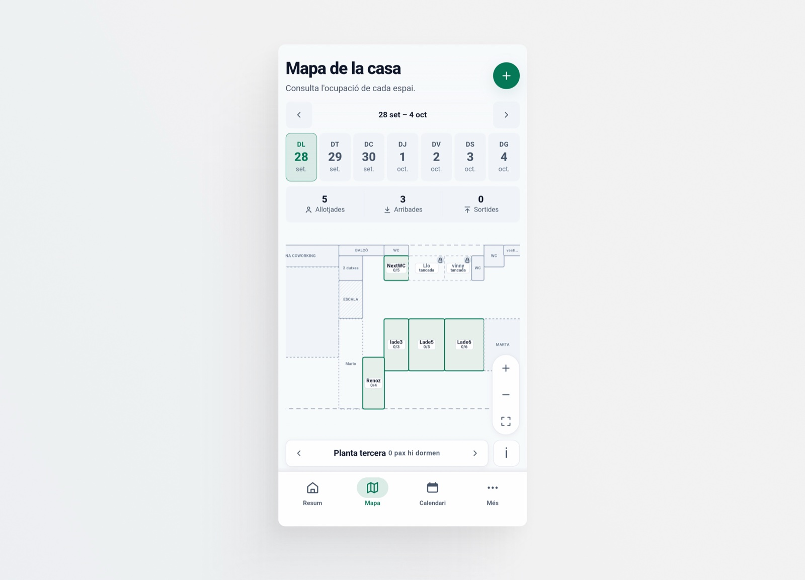

-
Product Designer & Builder
Remote / hybrid · Madrid–Barcelona
About meProfile and contactI turn needs, constraints and ideas into products we can validate now.
I work with users and stakeholders, from understanding the problem to designing and building the solution.
- AI speeds me up, it doesn't replace me.
- Every decision has a why.
-
Case study

K Rooms2026 Internal tool: functional design, no branding Room management with a web app -
New
Pagopero2026
From idea to production: branding, design and build
Track who owes you, share the link and tick off who has paid.
-
Gallery